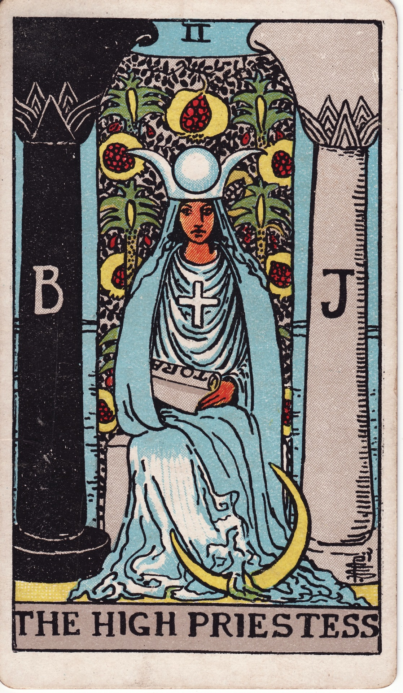
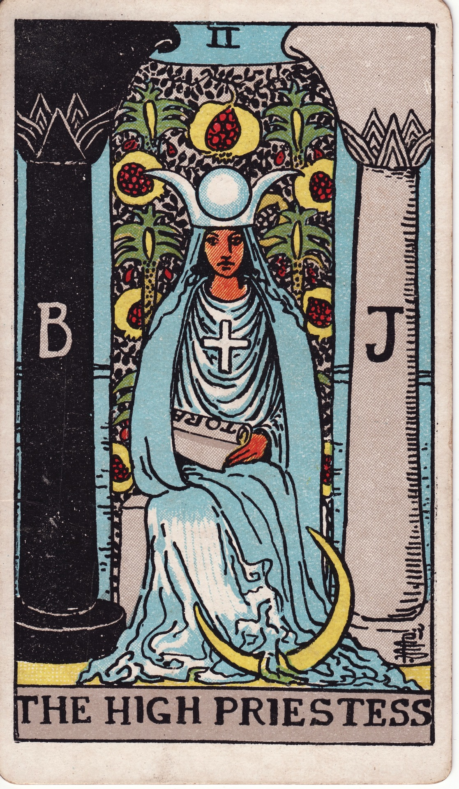

Caliban's Daughters is an interactive narrative game that explores feminist history, survival, and resistance during the European witch hunts (15th–17th centuries). The project draws on Silvia Federici's analysis of witch hunts as a mechanism of primitive accumulation and patriarchal discipline.
About the Game
Players inhabit the role of a woman whose knowledge, labor, or dissent places her under suspicion. Through tarot-inspired scenarios, the game exposes how everyday choices were entangled with structures of surveillance, fear, and collective punishment.
The game foregrounds the tension between individual survival and collective care, asking how resistance might persist under conditions of extreme control.
Gameplay Structure
→ Character selection based on historical roles
→ Decision-making through narrative tarot cards
→ Suspicion and alliance mechanics
→ Transition into a historically grounded witch trial (Level 2)
 
